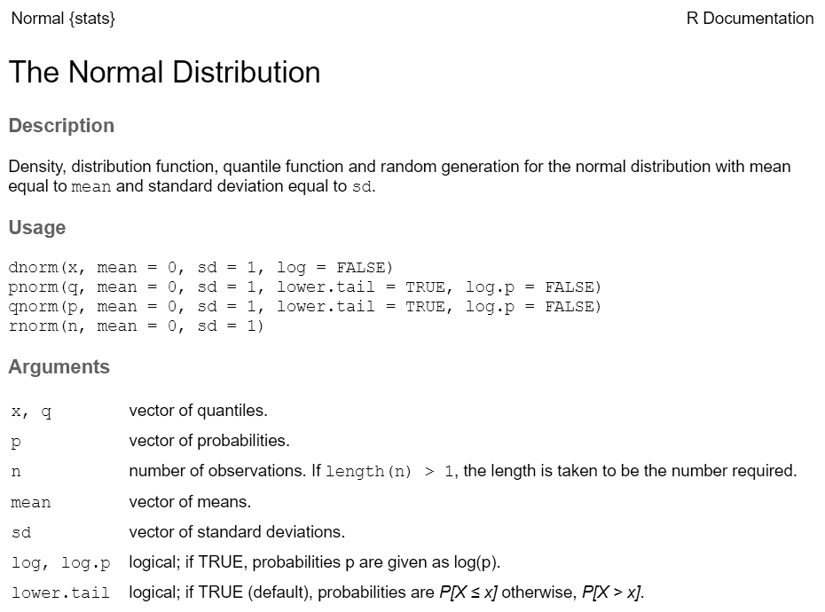
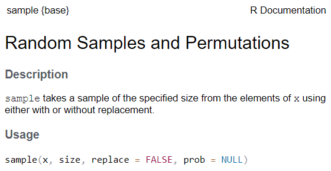
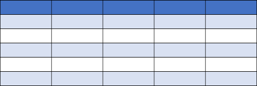
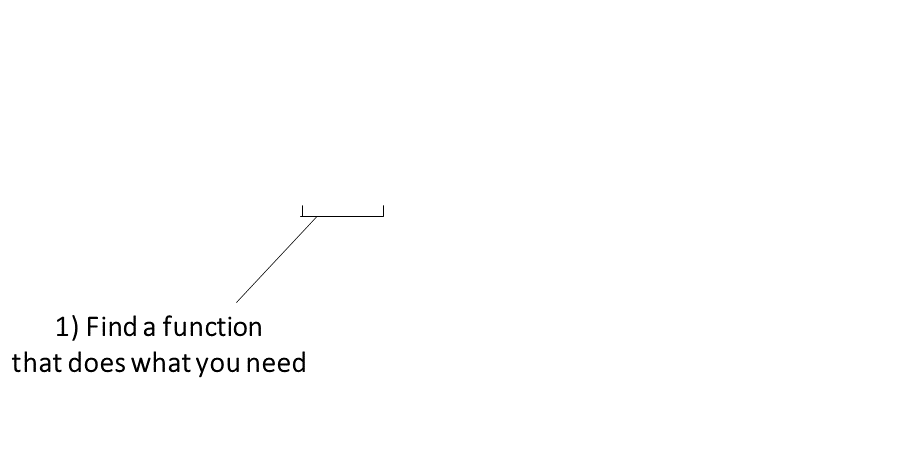
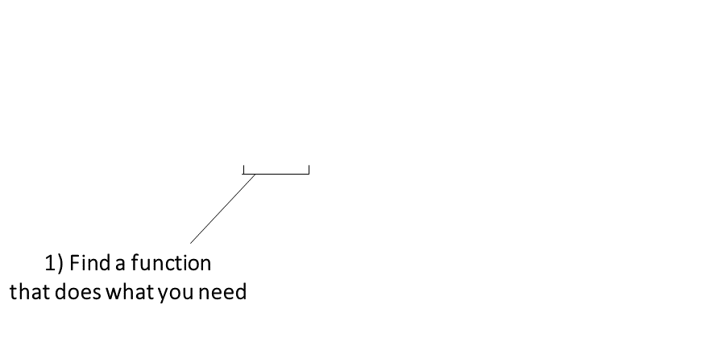

Fundamentals of Coding with R
Outline
- R as a fancy calculator
- objects and classes
- scripts & notebooks
- functions
- packages
- piping syntax
- vectors
- tabular data
R as a Fancy Calculator
-
When you type an expression at the console and hit
enter, R will evaluate the expression and print
the result at the console.
-
When you save or assign the result of an expression
to an object, R will not print the
value at the console.
-
R has two assignment operators:
-
To view the value of an object, you can enter it at the console.
Once defined, an object can be used in subsequent expressions.
Objects are stored in memory. They will disappear when you shut down
R (unless you tell RStudio to auto-save and reload objects in
memory).
-
Every object has a data type or class.
Common data types:
numeric
character
factor
date
data frame, tibble
matrix
list
Naming Objects
The rules for naming objects are pretty flexible. You can use
numbers, letters, and most special characters.
A few rules to take note of:
- Can’t start with a number: 3pieces
- Hyphens and spaces not allowed: first name,
last-name
- Don’t use the name of a built-in function, constant, or keyword:
c, pi
Naming Styles
There are a handful of popular naming styles. Pick one that you like, and be
consistent!
|
Style
|
Example
|
|
alllowercase
|
adjustcolor
|
|
period.separated
|
shoe.size
|
|
underscore_separated (aka snake case)
|
numeric_version
|
|
lowerCamelCase
|
addTaskCallback
|
|
UpperCamelCase
|
SignatureMethod
|
Scripts
Top five advantages of using scripts over the console:
-
Easier to write (and fix!) your code
-
You can add comments to remind yourself what each command is doing
-
Reuse your own code
-
You can add loops and if-then statements later on
-
Tell your friends you’re a
coder!

Notebooks
Similar to scripts, but can also include paragraph text, headings,
pictures, formatting, etc.
R supports RMarkdown and Quarto markdown (similar).
R code is included in “code chunks” that get executed whenever you
render the Notebook.
Notebooks are great when the desired output is an HTML
document, PDF, Word Doc,
etc.
For code that you want to repeat often, use a script.
Functions
The keys to R’s superpowers are functions! There are
four things you need to know to use a function:
What Do Functions Return?
- numbers
- dates
- text
- data frames and matrices
- spatial data
- plots
- trained regression models
- HTML widgets
- another function that returns a color ramp
- a drone image collection metadata record
- ⇒ almost anything you can think of can
be returned by a function!!
- ⇒ anything returned by a function can
also be saved to an object
Which function should I use?
Finding the right R function, half the battle is.
- Jedi MasteR
Yoda
|

|
Ask your friends
Ask Google / ChatGPT
Cheatsheets!
Function Help
Every function has a help page. To get to it enter ?
followed by the name of the function (without parentheses):

Function Arguments
Most functions take arguments. Arguments can be required or
optional (i.e. have a default value).
See the function’s help page to determine which arguments are
expected. Example:

x and size have no default value → they are
required
replace and prob have default values → they
are optional
To
name or not to name your arguments? That is the question.
All arguments have names. You can explicitly name arguments when
calling a function as follows:
rnorm(n = 100, mean = 10, sd = 0.3)
Benefits of naming your arguments:
- Helps you remember what each argument is
- You can enter then in any order
- You can skip arguments if you’re happy with the default value
But you can omit argument names if you pass them in
the order expected and don’t skip any.
rnorm(500, 50, 3) ## generate 500 normally distributed random
## numbers with a mean of 50 and stand dev = 3.
R Packages

Packages are what R calls extensions or
add-ons.
What’s in a package?
- additional functions!
- function help pages
- tutorials (Vignettes)
- datasets
Installing and Using Packages
Three simple steps to use the functions in a package:
Figure out which package you need
Install (i.e., download) it (just once)

- Load it into memory (must do this every time you start
RStudio)
Piping

Piping syntax is an alternative syntax for chaining
together functions.
With piping, you use the pipe operator |> (or %>%) to ‘feed’ the result of one function
into the next function.
Piping allows the results of one function to be passed as the
first argument of the next function. Hence a series of
commands to be written like a sentence.
This generally requires functions that have been written to make
changes to whatever object was passed in first argument, and return
it.
Example
Consider the expression:
zoo(moo(boo(foo(99)),n=4))
Piping Tips and Tricks
Keyboard shortcut for inserting the pipe operator:
ctrl + shift + m
You can tell RStudio which pipe to insert under Global Options
>> Code
|> (‘native’ pipe
introduced R4.0)
%>% (from
magrittr package)
To split a chain of functions across multiple lines, end
each line with a pipe operator:
seq(1, 10, 0.1) |>
log() |>
sum()
## [1] 141.4023
If the receiving function requires additional arguments, just add
them starting with the 2nd argument (or use named
arguments):
## [1] 0.41 0.97 0.08 0.07 0.26
Same Function Name, Different Packages
Occasionally two or more packages will have different functions that
use the same name. 
When this happens, R will use whichever one was loaded first.
Best practice: use the package name and the :: reference
to specify which package a function is from.
x <- sp::over()
x <- grDevices::over()
y <- raster::select()
y <- dplyr::select()
When you use the package_name::function_name
syntax, you don’t actually have to first load the package with
library().
Resolving Name Conflicts with the conflicted
Package
When you call a function that exists in multiple packages, R uses
whichever package was loaded first.
The conflicted package helps you avoid problems with
duplicate function names, by specifying which one to prioritize no
matter what order they were loaded.
library(conflicted)
# Set conflict preference
conflict_prefer("filter", "dplyr")
conflict_prefer("count", "dplyr")
conflict_prefer("select", "dplyr")
# From here on out, anytime we call select() or filter(), R will
# always use the dplyr version.
Vectors
Vectors are R objects that contain multiple
elements of the same class.
Example:
## [1] 4 5 6 7 8 9 10 11 12
More examples:

Making Vectors
In general, you need to use a function or
operator to create a vector.
Example 1: Create a sequence of numbers with the
: operator:
## [1] 1 2 3 4 5 6 7 8 9 10
Example 2: rep() function
## [1] "Quercus" "Quercus" "Quercus" "Quercus" "Quercus"
Example 3: Random number functions
## Generate normally distributed random numbers
rnorm(5)
## [1] -1.6891683 -1.1048986 -0.6000753 2.2828762 0.1296368
## R has a built-in constant with the names of the months
month.name
## [1] "January" "February" "March" "April" "May" "June"
## [7] "July" "August" "September" "October" "November" "December"
## Sample three months at random
sample(month.name, 3)
## [1] "November" "December" "January"
Example 4: Manually combine elements with
c()
yn <- c(TRUE, FALSE, TRUE)
yn
## [1] TRUE FALSE TRUE
How big is my vector?
“Vectorized” Functions: The Best Thing Since Sliced Bread
Many R functions and math operators are vectorized
(i.e., operate on each individual element).
Example
First we create two numeric vectors:
Are sin() & cos() vectorized?
## [1] 0.0000000 0.8414710 0.9092974 0.1411200 -0.7568025
## [1] 0.004425698 0.843853959 0.907446781 0.136737218 -0.759687913
Addition (and all math functions) is vectorized:
## [1] 1 2 3 4 5
## [1] 11 13 15 17 19
Aggregate functions
Functions that accept a vector and spit out a single value are called
aggregate functions.
## [1] 10
## [1] 2
## Standard deviation
sd(x)
## [1] 1.581139
Subset Vectors
To extract a single element from a vector, you can use square
bracket notation. Inside the square brackets, enter an
expression that specifies which elements to return.
my_vector[ expression-which-identifies-specific-elements
]
Option 1. Subset with
indices

To return multiple elements, pass a vector of
indices.
## [1] "CA" "CO" "CT"
state.abb[c(10, 4, 6, 9)]
## [1] "GA" "AR" "CO" "FL"
Option 2: Subset with
logicals
You can also insert a vector of logical values
(TRUE/FALSE) in the brackets. R will return the corresponding element
for the TRUE values.
month.name[c(FALSE, FALSE, TRUE, FALSE, FALSE, FALSE, FALSE, FALSE, FALSE, FALSE, FALSE, FALSE)]
## [1] "March"
Better still, use an expression that returns a
vector of logical values:
Example: Pull all out the months that start with
‘M’.
## View the first letter of each month
substr(month.name, 1, 1)
## [1] "J" "F" "M" "A" "M" "J" "J" "A" "S" "O" "N" "D"
## Use that to find all the months that start with 'M'
month.name[substr(month.name, 1, 1) == "M"]
## [1] "March" "May"
Tabular Data

R has two data classes that organize data in rows and columns:
Rows and Columns by any
other name….
rows
aka:
- record
- case
- observation
- feature (spatial)
columns
aka: variable, field
## Sepal.Length Sepal.Width Petal.Length Petal.Width Species
## 1 5.1 3.5 1.4 0.2 setosa
## 2 4.9 3.0 1.4 0.2 setosa
## 3 4.7 3.2 1.3 0.2 setosa
## 4 4.6 3.1 1.5 0.2 setosa
## 5 5.0 3.6 1.4 0.2 setosa
## 6 5.4 3.9 1.7 0.4 setosa
Key concepts
- columns of a data frame are vectors
- columns have names
- you can refer to columns by their name or
position
- data frames and tibbles are essentially
equivalent
Pulling out a Single Column
To get an individual column, use $
## Girth Height Volume
## 1 8.3 70 10.3
## 2 8.6 65 10.3
## 3 8.8 63 10.2
## 4 10.5 72 16.4
## 5 10.7 81 18.8
## 6 10.8 83 19.7
## [1] 70 65 63 72 81 83 66 75 80 75 79 76 76 69 75 74 85 86 71 64 78 80 74 72 77
## [26] 81 82 80 80 80 87
trees$Height |> summary()
## Min. 1st Qu. Median Mean 3rd Qu. Max.
## 63 72 76 76 80 87
Subsetting rows and columns
You can use square bracket notation or tidyverse methods (dplyr).
trees[10:12, c("Girth", "Volume")]
## Girth Volume
## 10 11.2 19.9
## 11 11.3 24.2
## 12 11.4 21.0
Importing Data: RStudio’s Import Dataset Wizard


 
